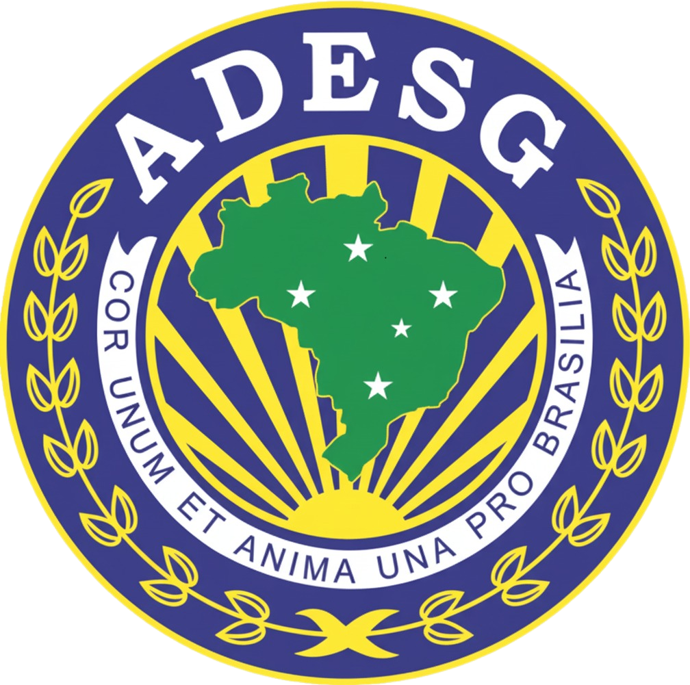

ADESG-MT
Associação dos Diplomados da Escola Superior de Guerra
Delegacia Regional de Mato Grosso
ADESG-MT — Conhecimento, Estratégia e
Compromisso com o Brasil.
Compromisso com o Brasil.

Escolha a formação que deseja conhecer.
CEPE — Curso de Estudos de Política e EstratégiaInformações sobre o CEPE›Outros cursosConheça os cursos disponíveis›Biblioteca Digital20 obras gratuitas para estudo e consulta›Seleção automática de notícias públicas sobre Defesa Nacional, Forças Armadas e assuntos estratégicos. Os títulos levam às fontes originais.
Acompanhe os registros de palestras, visitas técnicas, solenidades e encontros da Delegacia.
Atividades e publicações ›Posse da Diretoria 2026–2027 ›Conheça a atuação da Associação dos Diplomados da Escola Superior de Guerra em Mato Grosso e sua organização institucional.
Delegacia Regional de Mato GrossoHistória, missão e atuação institucional›Portal InstitucionalConheça a ADESG-MT, sua diretoria e suas publicações›Acesse as orientações de filiação e renovação ou preencha a ficha de filiação.
Ficha de FiliaçãoAcesse o formulário de filiação›Filiação e RenovaçãoInformações e orientações para associados›